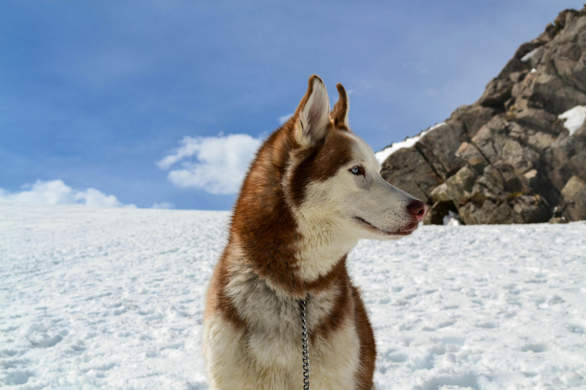
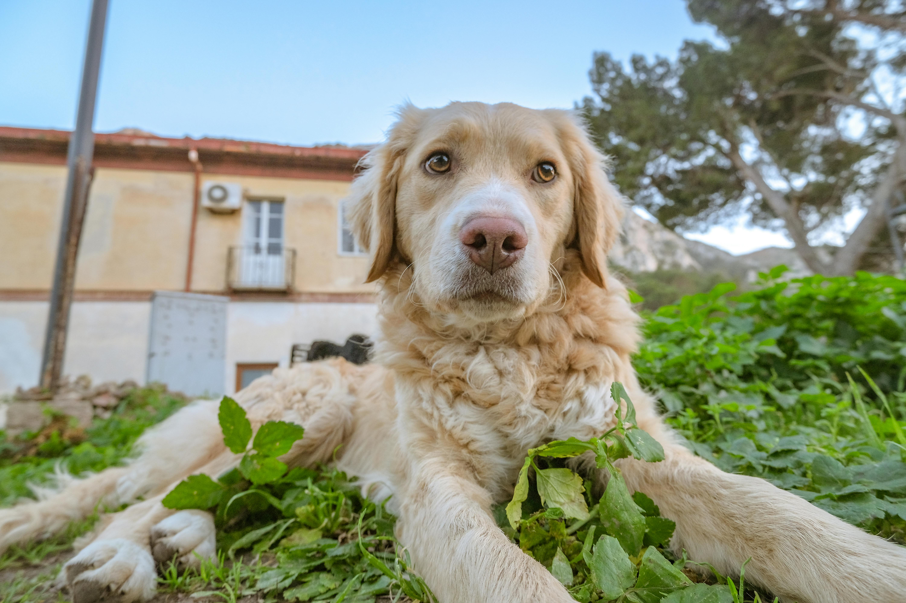
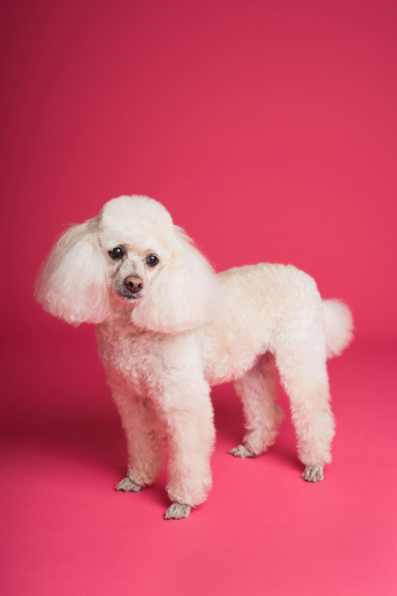

Siberian Husky
Siberian Huskies are a breed of medium-sized working sled dogs, known for their endurance, striking appearance, and friendly nature. They were originally bred by the Chukchi people of Siberia for pulling sleds and companionship, thriving in harsh, cold climates. Huskies are intelligent, energetic, and social dogs, making them good family pets for active owners who can provide them with plenty of exercise and mental stimulation.
Golden Retriever
Golden Retrievers have been one of America’s #1 breeds for over 25 years. Golden Retrievers are trustworthy, intelligent, friendly, high energy and very affectionate dogs. Golden Retrievers also known as “Goldens” make wonderful family pets.
Chihuahua
Chihuahuas are a small dog breed known for their big personalities. Originating from Mexico, they are one of the smallest dog breeds, typically weighing under 10 pounds. Despite their size, they are confident, alert, and fiercely loyal to their owners. They can be vocal, expressing themselves with barks and howls.

Poodle
Poodles are known for their intelligence, elegant appearance, and curly coat. They come in three sizes – Standard, Miniature, and Toy – all sharing the same breed standard. Poodles are highly trainable, energetic, and friendly, originally bred as water retrievers. Their distinctive curly coat requires regular grooming, and they come in various colors.
 Learn More